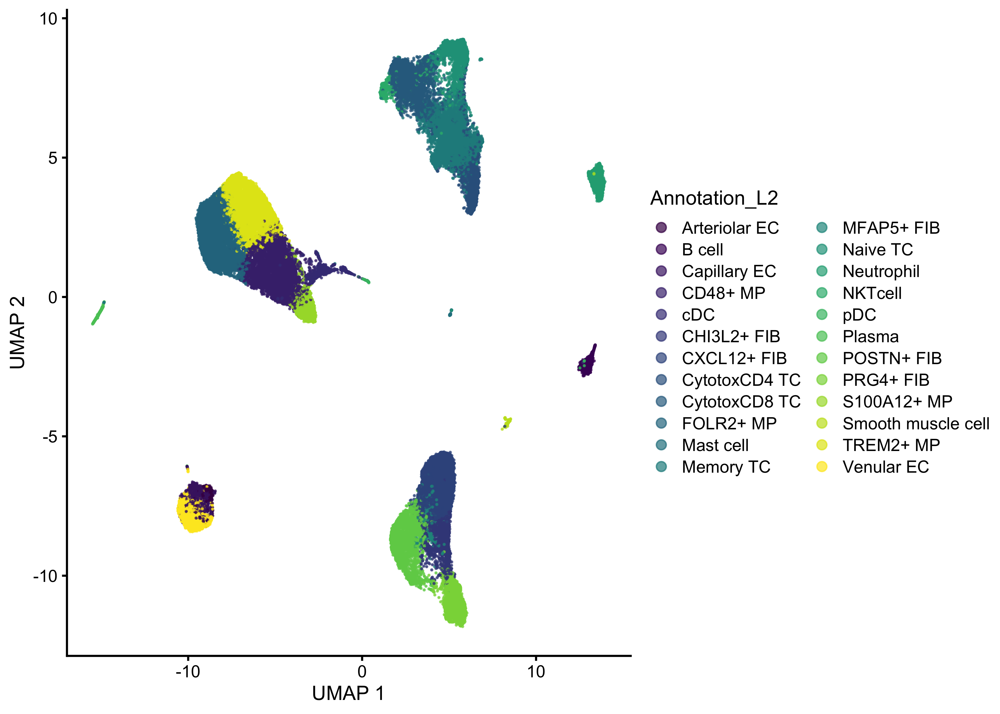
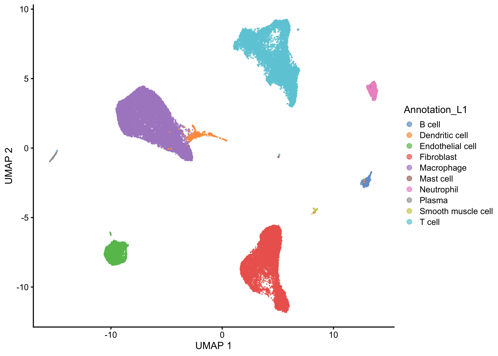
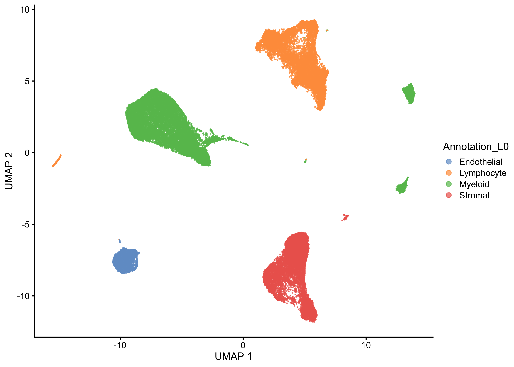
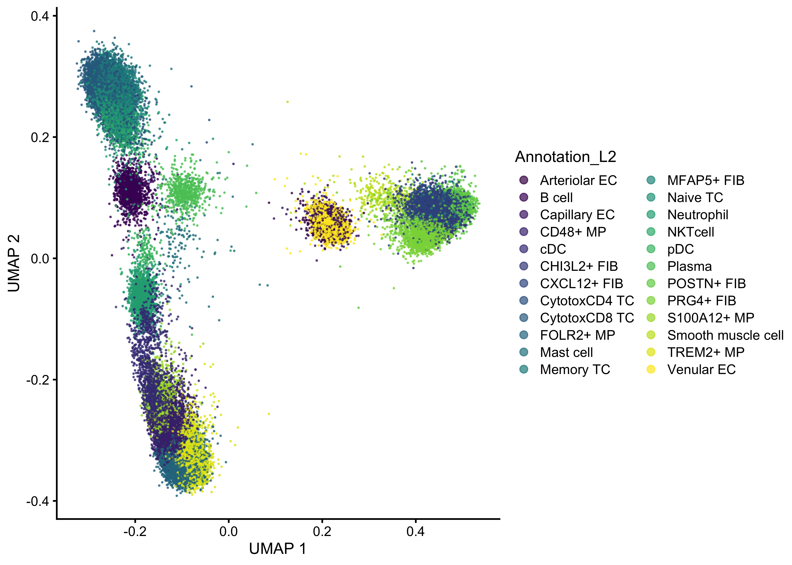
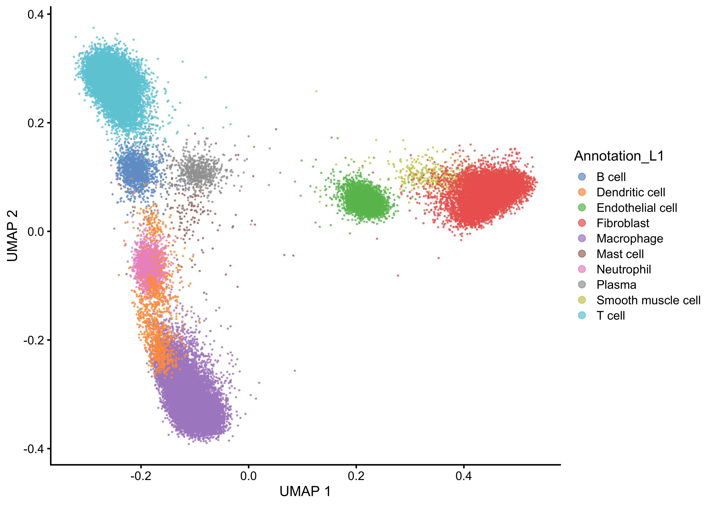
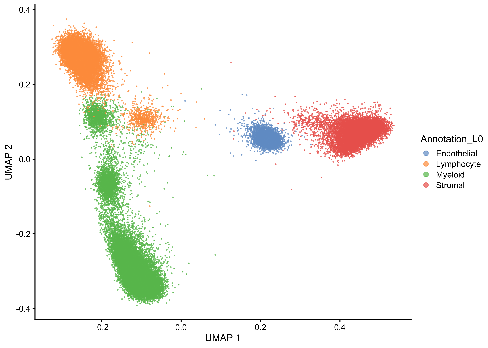
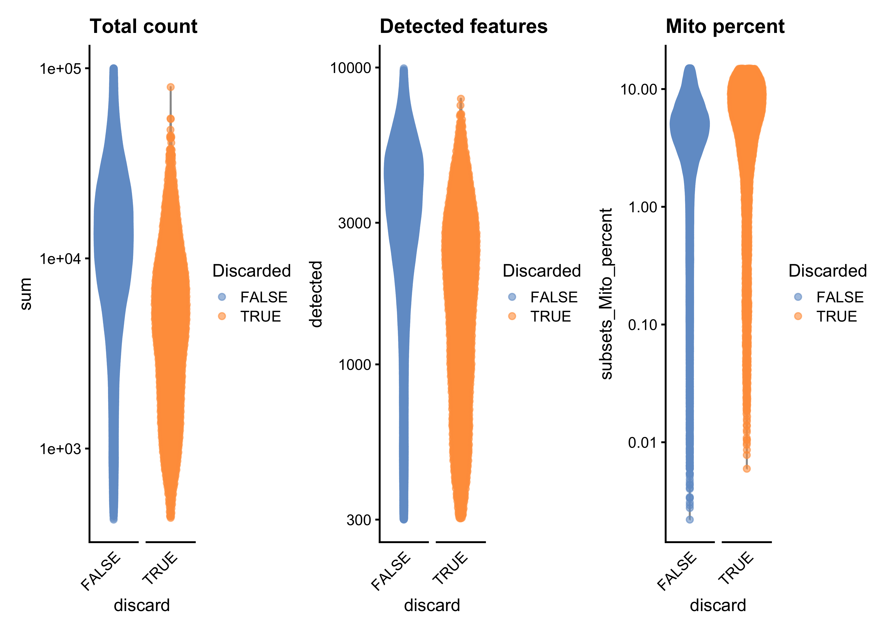
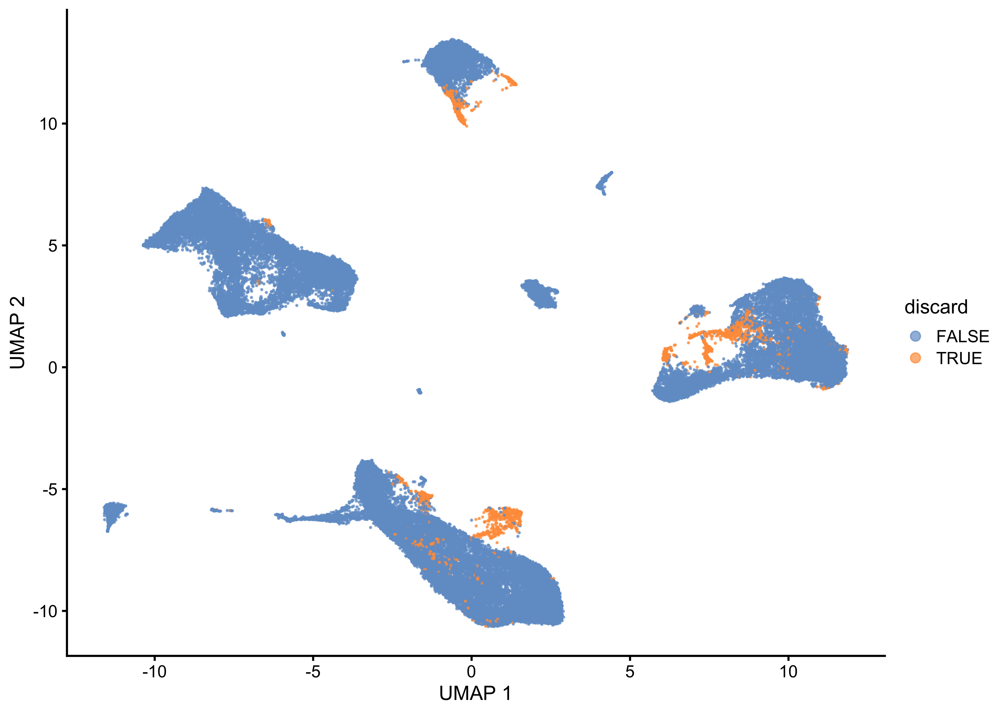
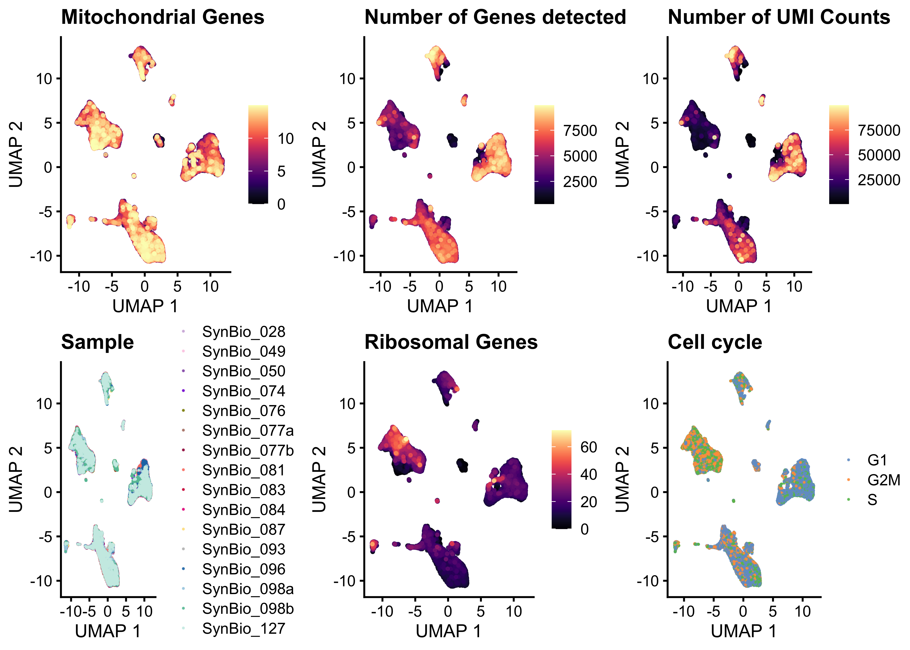

Last updated: 2024-06-27
Checks: 6 1
Knit directory: RA_SingleCellAnalysis/
This reproducible R Markdown analysis was created with workflowr (version 1.7.1). The Checks tab describes the reproducibility checks that were applied when the results were created. The Past versions tab lists the development history.
The R Markdown is untracked by Git. To know which version of the R
Markdown file created these results, you’ll want to first commit it to
the Git repo. If you’re still working on the analysis, you can ignore
this warning. When you’re finished, you can run
wflow_publish to commit the R Markdown file and build the
HTML.
Great job! The global environment was empty. Objects defined in the global environment can affect the analysis in your R Markdown file in unknown ways. For reproduciblity it’s best to always run the code in an empty environment.
The command set.seed(20240328) was run prior to running
the code in the R Markdown file. Setting a seed ensures that any results
that rely on randomness, e.g. subsampling or permutations, are
reproducible.
Great job! Recording the operating system, R version, and package versions is critical for reproducibility.
Nice! There were no cached chunks for this analysis, so you can be confident that you successfully produced the results during this run.
Great job! Using relative paths to the files within your workflowr project makes it easier to run your code on other machines.
Great! You are using Git for version control. Tracking code development and connecting the code version to the results is critical for reproducibility.
The results in this page were generated with repository version 5887ab5. See the Past versions tab to see a history of the changes made to the R Markdown and HTML files.
Note that you need to be careful to ensure that all relevant files for
the analysis have been committed to Git prior to generating the results
(you can use wflow_publish or
wflow_git_commit). workflowr only checks the R Markdown
file, but you know if there are other scripts or data files that it
depends on. Below is the status of the Git repository when the results
were generated:
Ignored files:
Ignored: .DS_Store
Ignored: .Rhistory
Ignored: .Rproj.user/
Ignored: analysis/.DS_Store
Ignored: analysis/figure/
Ignored: data/.DS_Store
Ignored: data/cellbender_data_h5/
Ignored: data/spatial/
Ignored: output/00_DoubletDetection.rds
Ignored: output/00_sce_DataPreparation.rds
Ignored: output/01_sce_QualityControl.rds
Ignored: output/01_sce_QualityControl_cellfiltered.rds
Ignored: output/02_sce_DimensionalityReduction.rds
Ignored: output/03_sce_Integration_Batchelor.rds
Ignored: output/03_sce_Integration_Harmony.rds
Ignored: output/04_sce_CellCycle.rds
Ignored: output/05_sce_CelltypeAnnotation.rds
Ignored: output/05_sce_Clustering.rds
Ignored: output/06_sce_CelltypeAnnotation.rds
Ignored: output/07_sce_SC_Bcell.rds
Ignored: output/07_sce_SC_Dendritic.rds
Ignored: output/07_sce_SC_Dendritic_Anno.rds
Ignored: output/07_sce_SC_Endothelial.rds
Ignored: output/07_sce_SC_Endothelial_Anno.rds
Ignored: output/07_sce_SC_Fibroblast.rds
Ignored: output/07_sce_SC_Fibroblast_Anno.rds
Ignored: output/07_sce_SC_Macrophage.rds
Ignored: output/07_sce_SC_Macrophage_Anno.rds
Ignored: output/07_sce_SC_Mast.rds
Ignored: output/07_sce_SC_Merge.rds
Ignored: output/07_sce_SC_Neutrophil.rds
Ignored: output/07_sce_SC_Plasma.rds
Ignored: output/07_sce_SC_SmoothMuscle.rds
Ignored: output/07_sce_SC_Tcell.rds
Ignored: output/07_sce_SC_Tcell_Anno.rds
Ignored: output/08_DifferentialAbundance_miloR.rds
Ignored: output/10_sce_CellChat_Knee.rds
Ignored: output/10_sce_CellChat_MCP.rds
Ignored: output/10_sce_CellChat_Wrist.rds
Ignored: output/Annotation_L0_Wilcoxon.xlsx
Ignored: output/Annotation_L1_Wilcoxon.xlsx
Ignored: output/Annotation_output/
Ignored: output/Cluster_Marker_Genes.xlsx
Ignored: output/Knee_KvM.csv
Ignored: output/Knee_KvW.csv
Ignored: output/MAST_output/
Ignored: output/MCP_KvM.csv
Ignored: output/MCP_MvW.csv
Ignored: output/ManualAnno_L0_Wilcoxon.xlsx
Ignored: output/ManualAnno_L1_Wilcoxon.xlsx
Ignored: output/ScMergeAnnotation_output/
Ignored: output/Spatial_knee.rds
Ignored: output/Spatial_knee_SC.rds
Ignored: output/Subcluster_Annotation_output/
Ignored: output/Wrist_KvW.csv
Ignored: output/Wrist_MvW.csv
Ignored: renv/.DS_Store
Ignored: renv/library/
Ignored: renv/staging/
Untracked files:
Untracked: analysis/07_SubClustering_Merge.Rmd
Untracked: analysis/08_DifferentialExpression_EdgeR.Rmd
Untracked: analysis/08_DifferentialExpression_MAST.Rmd
Untracked: analysis/08_DifferentialExpression_Pseudobulk.Rmd
Untracked: analysis/08_DifferentialExpression_muscat.Rmd
Untracked: analysis/09_DifferentialAbundance_miloR.Rmd
Untracked: analysis/10_EnrichmentAnalysis.Rmd
Untracked: analysis/11_CellChat.Rmd
Untracked: analysis/99_Plotting.Rmd
Untracked: analysis/Spatial_hand.Rmd
Untracked: analysis/Spatial_knee.Rmd
Unstaged changes:
Modified: analysis/02_DimensionalityReduction.Rmd
Modified: analysis/03_Integration_Batchelor.Rmd
Modified: analysis/06_CelltypeAnnotation.Rmd
Modified: analysis/06_SC_Fibroblast.Rmd
Deleted: analysis/07_DifferentialExpression_EdgeR.Rmd
Deleted: analysis/07_DifferentialExpression_MAST.Rmd
Deleted: analysis/07_DifferentialExpression_Pseudobulk.Rmd
Deleted: analysis/07_DifferentialExpression_muscat.Rmd
Modified: analysis/07_SubClustering.Rmd
Modified: analysis/07_SubClustering_Annotation.Rmd
Deleted: analysis/08_DifferentialAbundance_miloR.Rmd
Deleted: analysis/09_EnrichmentAnalysis.Rmd
Deleted: analysis/10_Plotting.Rmd
Deleted: analysis/Ege_06_SC_Fibroblast.Rmd
Deleted: analysis/OLD06_SubClustering.Rmd
Modified: analysis/_site.yml
Modified: analysis/index.Rmd
Modified: code/standard_libraries.R
Modified: renv.lock
Note that any generated files, e.g. HTML, png, CSS, etc., are not included in this status report because it is ok for generated content to have uncommitted changes.
There are no past versions. Publish this analysis with
wflow_publish() to start tracking its development.
library(here)
source(here("code", "standard_libraries.R"))#Load Packages
suppressPackageStartupMessages({
library(intrinsicDimension)
library(patchwork)
library(presto)
library(xlsx)
})set.seed(100)
bpp <- BiocParallel::MulticoreParam(parallel::detectCores()-1, RNGseed=100)
path <- here::here()
#Output path
output_dir <- here("output","ScMergeAnnotation_output")
if(!dir.exists(output_dir)) dir.create(output_dir)hvg_list<-c()#Load sce set Annotation_L2 to clustername & remove hvg.sc
sce.SMC <- readRDS(file = paste0(path,'/output/07_sce_SC_SmoothMuscle.rds'))
sce.SMC$Annotation_L2 <- "Smooth muscle cell"
hvg_list<-union(hvg_list, rownames(sce.SMC)[rowData(sce.SMC)$hvg.sc])
rowData(sce.SMC)$hvg.sc <- NULL
sce.Mast <- readRDS(file = paste0(path,'/output/07_sce_SC_Mast.rds'))
sce.Mast$Annotation_L2 <- "Mast cell"
hvg_list<-union(hvg_list, rownames(sce.Mast)[rowData(sce.Mast)$hvg.sc])
rowData(sce.Mast)$hvg.sc <- NULL
sce.Bcell <- readRDS(file = paste0(path,'/output/07_sce_SC_Bcell.rds'))
sce.Bcell$Annotation_L2 <- "B cell"
hvg_list<-union(hvg_list, rownames(sce.Bcell)[rowData(sce.Bcell)$hvg.sc])
rowData(sce.Bcell)$hvg.sc <- NULL
sce.Plasma <- readRDS(file = paste0(path,'/output/07_sce_SC_Plasma.rds'))
sce.Plasma$Annotation_L2 <- "Plasma"
hvg_list<-union(hvg_list, rownames(sce.Plasma)[rowData(sce.Plasma)$hvg.sc])
rowData(sce.Plasma)$hvg.sc <- NULL
sce.Neutrophil <- readRDS(file = paste0(path,'/output/07_sce_SC_Neutrophil.rds'))
sce.Neutrophil$Annotation_L2 <- "Neutrophil"
hvg_list<-union(hvg_list, rownames(sce.Neutrophil)[rowData(sce.Neutrophil)$hvg.sc])
rowData(sce.Neutrophil)$hvg.sc <- NULL#Load sce & remove is_hvg_sc
sce.Fibroblast <- readRDS(file = paste0(path,'/output/07_sce_SC_Fibroblast_Anno.rds'))
hvg_list<-union(hvg_list, rownames(sce.Fibroblast)[rowData(sce.Fibroblast)$hvg.sc])
rowData(sce.Fibroblast)$hvg.sc <- NULL
sce.Macrophage <- readRDS(file = paste0(path,'/output/07_sce_SC_Macrophage_Anno.rds'))
hvg_list<-union(hvg_list, rownames(sce.Macrophage)[rowData(sce.Macrophage)$hvg.sc])
rowData(sce.Macrophage)$hvg.sc <- NULL
sce.Tcell <- readRDS(file = paste0(path,'/output/07_sce_SC_Tcell_Anno.rds'))
hvg_list<-union(hvg_list, rownames(sce.Tcell)[rowData(sce.Tcell)$hvg.sc])
rowData(sce.Tcell)$hvg.sc <- NULL
sce.Endothelial <- readRDS(file = paste0(path,'/output/07_sce_SC_Endothelial_Anno.rds'))
hvg_list<-union(hvg_list, rownames(sce.Endothelial)[rowData(sce.Endothelial)$hvg.sc])
rowData(sce.Endothelial)$hvg.sc <- NULL
sce.Dendritic <- readRDS(file = paste0(path,'/output/07_sce_SC_Dendritic_Anno.rds'))
hvg_list<-union(hvg_list, rownames(sce.Dendritic)[rowData(sce.Dendritic)$hvg.sc])
rowData(sce.Dendritic)$hvg.sc <- NULL#Indicate discarted cells
#colData(sce)$subcluster <- "discard"
sce.merged <- cbind(sce.SMC,sce.Mast,sce.Bcell,sce.Plasma,sce.Neutrophil,sce.Fibroblast, sce.Macrophage,sce.Tcell,sce.Endothelial,sce.Dendritic)
#add hvgs for subclustering
rowData(sce.merged)$is_hvg_sc <- rownames(sce.merged) %in% hvg_list
rm(sce.SMC,sce.Mast,sce.Bcell,sce.Plasma,sce.Neutrophil,sce.Fibroblast, sce.Macrophage,sce.Tcell,sce.Endothelial,sce.Dendritic,hvg_list)
gc() used (Mb) gc trigger (Mb) limit (Mb) max used (Mb)
Ncells 10096903 539.3 14945550 798.2 NA 14641526 782.0
Vcells 733350778 5595.1 2251402099 17176.9 102400 2739756837 20902.7#Get top HVG for subcluster
dec <- modelGeneVar(sce.merged, block=sce.merged$Sample, density.weights=FALSE,BPPARAM=bpp)
top.hvgs <- getTopHVGs(dec, n=3000)
rowData(sce.merged)$is_hvg_merge <- rownames(sce.merged) %in% top.hvgs
#Get recalculated PCA on Merge
sce.merged<-runPCA(sce.merged,exprs_values ="reconstructed", subset_row = rowData(sce.merged)$is_hvg_merge, name = "MNN_merge")
#Get PC elbow
elbow <- ceiling(as.numeric(maxLikGlobalDimEst(as.matrix(reducedDim(sce.merged, "MNN_merge")), k=5)))
cat(paste0("Elbow Point: ",elbow))Elbow Point: 17reducedDim(sce.merged, 'MNN_merge_reduced') <- reducedDim(sce.merged, 'MNN_merge')[,seq_len(elbow)]
#Get recalculated UMAP on Merge
sce.merged <- runUMAP(sce.merged,name = "MNN_merge_reduced", dimred = 'MNN_merge_reduced',subset_row=rowData(sce.merged)$is_hvg_merge)plotReducedDim(sce.merged, dimred="MNN_merge_reduced", colour_by="Annotation_L2",point_alpha=0.7,point_size=0.1)+
labs( x='UMAP 1', y='UMAP 2' )+
guides(colour = guide_legend(override.aes = list(size=2)))
plotReducedDim(sce.merged, dimred="MNN_merge_reduced", colour_by="Annotation_L1",point_alpha=0.7,point_size=0.1)+
labs( x='UMAP 1', y='UMAP 2' )+
guides(colour = guide_legend(override.aes = list(size=2)))
plotReducedDim(sce.merged, dimred="MNN_merge_reduced", colour_by="Annotation_L0",point_alpha=0.7,point_size=0.1)+
labs( x='UMAP 1', y='UMAP 2' )+
guides(colour = guide_legend(override.aes = list(size=2)))
plotReducedDim(sce.merged, dimred="MNN_merge", colour_by="Annotation_L2",point_alpha=0.7,point_size=0.1)+
labs( x='UMAP 1', y='UMAP 2' )+
guides(colour = guide_legend(override.aes = list(size=2)))
plotReducedDim(sce.merged, dimred="MNN_merge", colour_by="Annotation_L1",point_alpha=0.7,point_size=0.1)+
labs( x='UMAP 1', y='UMAP 2' )+
guides(colour = guide_legend(override.aes = list(size=2)))
plotReducedDim(sce.merged, dimred="MNN_merge", colour_by="Annotation_L0",point_alpha=0.7,point_size=0.1)+
labs( x='UMAP 1', y='UMAP 2' )+
guides(colour = guide_legend(override.aes = list(size=2)))
saveRDS(sce.merged, file =paste0(path,'/output/07_sce_SC_Merge.rds'))for (labeling in c('Annotation_L0','Annotation_L1','Annotation_L2')){
#Wilcoxon rank-sum test
markers_wilcox <- wilcoxauc(sce.merged, group_by=labeling, assay = 'logcounts')
topDEgenes <- top_markers(markers_wilcox, n = 100, auc_min = 0.5, pval_max = 0.05)# filter for significant (p<0.05) and over-expressed (auc>0.5)
wb = createWorkbook()
for (i in unique(markers_wilcox$group) ){
#get genes for the Anno
markers<-topDEgenes[,paste0(i), drop=TRUE]
#Create table
tmp<-markers_wilcox[markers_wilcox$feature %in% markers & markers_wilcox$group == i,]
#Save table in Exelsheet
addDataFrame(tmp, sheet=createSheet(wb, paste0(i)), startColumn=1, row.names=FALSE,col.names = TRUE)
}
saveWorkbook(wb,paste0( output_dir , "/",paste0(labeling),"_Wilcoxon.xlsx"))
}## RA DATASET
sce <- readRDS(file = paste0(path,'/output/06_sce_CelltypeAnnotation.rds')) # 06# Get discarded cells
discard <- !(colnames(sce) %in% colnames(sce.merged))
# Add this as a new column to colData of sce1
sce$discard <- discard#Give Stats
cat("NR of Cells Before Subcluster QC: ", dim(sce)[2],"\n",
"NR of Cells After Subcluster QC: ", dim(sce.merged)[2],"\n",
"NR of Cells Filtered out: ", dim(sce)[2] - dim(sce.merged)[2],"\n",
"Cells Filtered out: [%]", (dim(sce)[2] - dim(sce.merged)[2])/dim(sce)[2]*100,"\n"
)NR of Cells Before Subcluster QC: 64639
NR of Cells After Subcluster QC: 61242
NR of Cells Filtered out: 3397
Cells Filtered out: [%] 5.255341 p1<-plotColData(sce, x="discard", y="sum",other_fields="discard",colour_by = "discard") +
facet_wrap(~discard, nrow=1, scales = "free_x") +
scale_y_log10() +
ggtitle("Total count")+
guides(colour=guide_legend(title="Discarded"))+
theme(axis.text.x = element_text(angle = 45,hjust=1), axis.ticks.x=element_blank(),strip.text.x = element_blank())
p2<-plotColData(sce, x="discard", y="detected",other_fields="discard",colour_by = "discard") +
facet_wrap(~discard, nrow=1, scales = "free_x") +
scale_y_log10() +
ggtitle("Detected features")+
guides(colour=guide_legend(title="Discarded"))+
theme(axis.text.x = element_text(angle = 45,hjust=1), axis.ticks.x=element_blank(),strip.text.x = element_blank())
p3<-plotColData(sce, x="discard", y="subsets_Mito_percent",other_fields="discard",colour_by = "discard") +
facet_wrap(~discard, nrow=1, scales = "free_x") +
scale_y_log10() +
ggtitle("Mito percent")+
guides(colour=guide_legend(title="Discarded"))+
theme(axis.text.x = element_text(angle = 45,hjust=1), axis.ticks.x=element_blank(),strip.text.x = element_blank())
p1+p2+p3
plotReducedDim(sce, dimred="MNN_UMAP_reduced", colour_by="discard",point_alpha=0.7,point_size=0.1)+
labs( x='UMAP 1', y='UMAP 2' )+
guides(colour = guide_legend(override.aes = list(size=2)))
print(Plot_QC_dimred(sce,dim="MNN_UMAP_reduced"))
TableGrob (2 x 3) "arrange": 6 grobs
z cells name grob
1 1 (1-1,1-1) arrange gtable[layout]
2 2 (1-1,2-2) arrange gtable[layout]
3 3 (1-1,3-3) arrange gtable[layout]
4 4 (2-2,1-1) arrange gtable[layout]
5 5 (2-2,2-2) arrange gtable[layout]
6 6 (2-2,3-3) arrange gtable[layout]
sessionInfo()R version 4.3.3 (2024-02-29)
Platform: x86_64-apple-darwin20 (64-bit)
Running under: macOS Sonoma 14.4.1
Matrix products: default
BLAS: /Library/Frameworks/R.framework/Versions/4.3-x86_64/Resources/lib/libRblas.0.dylib
LAPACK: /Library/Frameworks/R.framework/Versions/4.3-x86_64/Resources/lib/libRlapack.dylib; LAPACK version 3.11.0
locale:
[1] en_US.UTF-8/en_US.UTF-8/en_US.UTF-8/C/en_US.UTF-8/en_US.UTF-8
time zone: Europe/Warsaw
tzcode source: internal
attached base packages:
[1] stats4 stats graphics grDevices datasets utils methods
[8] base
other attached packages:
[1] xlsx_0.6.5 presto_1.0.0
[3] data.table_1.15.4 Rcpp_1.0.12
[5] patchwork_1.2.0 intrinsicDimension_1.2.0
[7] yaImpute_1.0-34 tidyr_1.3.1
[9] org.Hs.eg.db_3.18.0 AnnotationDbi_1.64.1
[11] clusterProfiler_4.10.1 viridis_0.6.5
[13] viridisLite_0.4.2 gridExtra_2.3
[15] scran_1.30.2 scater_1.30.1
[17] scuttle_1.12.0 SingleCellExperiment_1.24.0
[19] SummarizedExperiment_1.32.0 Biobase_2.62.0
[21] GenomicRanges_1.54.1 GenomeInfoDb_1.38.8
[23] IRanges_2.36.0 S4Vectors_0.40.2
[25] BiocGenerics_0.48.1 MatrixGenerics_1.14.0
[27] matrixStats_1.3.0 dplyr_1.1.4
[29] ggplot2_3.5.1 BiocParallel_1.36.0
[31] here_1.0.1 workflowr_1.7.1
loaded via a namespace (and not attached):
[1] RcppAnnoy_0.0.22 splines_4.3.3
[3] later_1.3.2 bitops_1.0-7
[5] ggplotify_0.1.2 tibble_3.2.1
[7] polyclip_1.10-6 lifecycle_1.0.4
[9] edgeR_4.0.16 rprojroot_2.0.4
[11] processx_3.8.4 lattice_0.22-6
[13] MASS_7.3-60.0.1 magrittr_2.0.3
[15] limma_3.58.1 sass_0.4.9
[17] rmarkdown_2.27 jquerylib_0.1.4
[19] yaml_2.3.8 metapod_1.10.1
[21] httpuv_1.6.15 cowplot_1.1.3
[23] DBI_1.2.3 RColorBrewer_1.1-3
[25] abind_1.4-5 zlibbioc_1.48.2
[27] purrr_1.0.2 ggraph_2.2.1
[29] RCurl_1.98-1.14 yulab.utils_0.1.4
[31] xlsxjars_0.6.1 tweenr_2.0.3
[33] git2r_0.33.0 GenomeInfoDbData_1.2.11
[35] enrichplot_1.22.0 ggrepel_0.9.5
[37] irlba_2.3.5.1 tidytree_0.4.6
[39] dqrng_0.4.1 DelayedMatrixStats_1.24.0
[41] codetools_0.2-20 DelayedArray_0.28.0
[43] DOSE_3.28.2 ggforce_0.4.2
[45] tidyselect_1.2.1 aplot_0.2.3
[47] farver_2.1.2 ScaledMatrix_1.10.0
[49] jsonlite_1.8.8 BiocNeighbors_1.20.2
[51] tidygraph_1.3.1 tools_4.3.3
[53] treeio_1.26.0 glue_1.7.0
[55] SparseArray_1.2.4 xfun_0.45
[57] qvalue_2.34.0 withr_3.0.0
[59] BiocManager_1.30.23 fastmap_1.2.0
[61] bluster_1.12.0 fansi_1.0.6
[63] callr_3.7.6 digest_0.6.36
[65] rsvd_1.0.5 R6_2.5.1
[67] gridGraphics_0.5-1 colorspace_2.1-0
[69] GO.db_3.18.0 RSQLite_2.3.7
[71] utf8_1.2.4 generics_0.1.3
[73] renv_1.0.7 graphlayouts_1.1.1
[75] httr_1.4.7 S4Arrays_1.2.1
[77] scatterpie_0.2.3 whisker_0.4.1
[79] uwot_0.2.2 pkgconfig_2.0.3
[81] rJava_1.0-11 gtable_0.3.5
[83] blob_1.2.4 XVector_0.42.0
[85] shadowtext_0.1.3 htmltools_0.5.8.1
[87] fgsea_1.28.0 scales_1.3.0
[89] png_0.1-8 ggfun_0.1.5
[91] knitr_1.47 rstudioapi_0.16.0
[93] reshape2_1.4.4 nlme_3.1-165
[95] cachem_1.1.0 stringr_1.5.1
[97] parallel_4.3.3 vipor_0.4.7
[99] HDO.db_0.99.1 pillar_1.9.0
[101] grid_4.3.3 vctrs_0.6.5
[103] promises_1.3.0 BiocSingular_1.18.0
[105] beachmat_2.18.1 cluster_2.1.6
[107] beeswarm_0.4.0 evaluate_0.24.0
[109] cli_3.6.3 locfit_1.5-9.10
[111] compiler_4.3.3 rlang_1.1.4
[113] crayon_1.5.3 labeling_0.4.3
[115] ps_1.7.6 getPass_0.2-4
[117] plyr_1.8.9 fs_1.6.4
[119] ggbeeswarm_0.7.2 stringi_1.8.4
[121] munsell_0.5.1 Biostrings_2.70.3
[123] lazyeval_0.2.2 GOSemSim_2.28.1
[125] Matrix_1.6-5 sparseMatrixStats_1.14.0
[127] bit64_4.0.5 KEGGREST_1.42.0
[129] statmod_1.5.0 highr_0.11
[131] igraph_2.0.3 memoise_2.0.1
[133] bslib_0.7.0 ggtree_3.10.1
[135] fastmatch_1.1-4 bit_4.0.5
[137] gson_0.1.0 ape_5.8